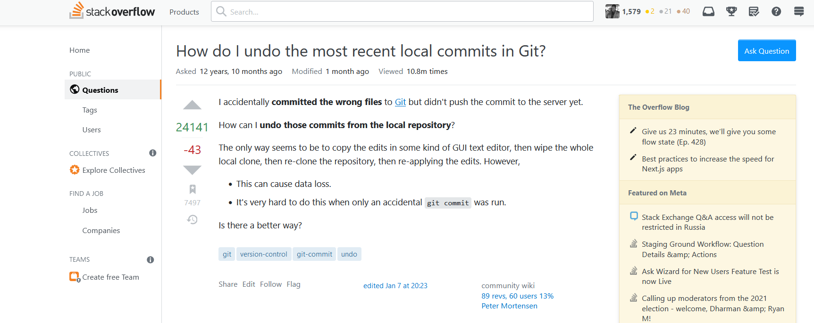

R Code – Asking better coding questions
Ken Mwai
Pointers
- R is free software
- Constructed and maintained by volunteers
- The R-spirit is kept alive by the community
Remember : We (They) have limited time
Golden Rule
- The Golden Rule: Imagine You’re Trying To Answer The Question
(And yes, this does smack somewhat of Matthew 7:12.)
Why do you ask a question ::
- Solve an existing problem
- Debug an error
- ….
Before you ask
- Search, and research –> keep track of what you find.
- Write a title that summarizes the specific problem
- Remember you are talking to a busy colleague
- Spelling, grammar and punctuation are important! (Impression)
- Important to highlight what language and platform you’re using.
The basics should usually be communicated through tags

## Error in x * 2: non-numeric argument to binary operator
Examples:
Bad: multiplication error
Good: Why does x*2 evaluation in R return an error when x is set to "2"?
- A question such as “Why doesn’t this work?” makes absolutely no sense
without the rest of the question.
- Introduce the problem before you post any code (Well, what did you expect it to do? What are you trying to accomplish? What have you already tried? )
- Expand on the summary put on the title
- Explain the path to the problem
- Explain the difficulties
I am trying to multiply an object in R but I get an evaluation error.
I first define an object `x="3"` then
multiply that by 2 as shown below. I tried ...
- Help others reproduce the problem (Sample code and data)
- Include some code if the problem is code related.
- NB: don’t just copy in your entire script!
- Include just enough code to allow error reproducibility
- Point out differences between your situation and other common ones
- DO NOT post images of code, data, error messages, etc.
I am trying to multiply an object in R but I get an evaluation error.
I first define an object `x="3"` then
multiply that by 2 as shown below. I tried ...
Below is the code I was working with.
## Error in x * 2: non-numeric argument to binary operator
Proof-read before posting!
Look for help asking for help
Post the answer if you get it before someone answers.
Making a good impression
- Register as a user and give yourself a meaningful name.
Keep an eye on your question.
Don’t add your own answer unless it really is an answer.
There’s no need to include greetings and sign-offs
- such as “Hi everyone!” and “Thanks – hope to get an answer soon” in the question.
Above all, be polite. Remember that no-one is getting paid to answer your question.